Meet the Officers
Albert Wang:
Co-President
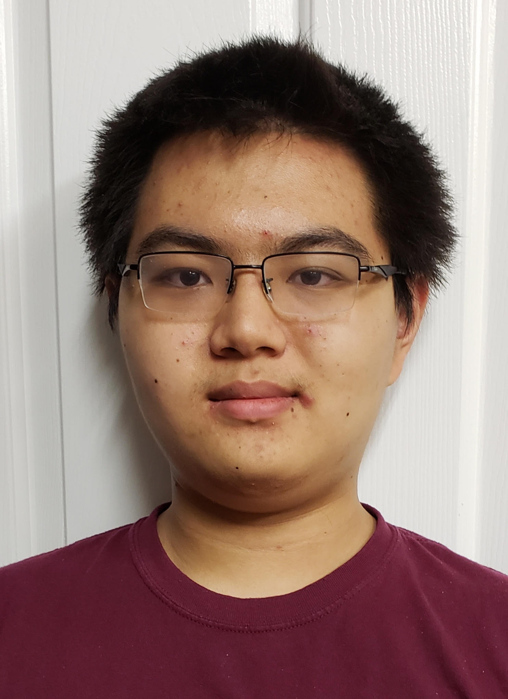
Albert Wang is a senior at Cypress Bay High School. He’s been a math enthusiast since he was in 4th grade, and when he began participating in FLSAM during 8th grade, he was hooked. Albert has competed in the AMCs, FAMAT, ARML, AIME, and both levels of the USA(J)MO. Shortly after being introduced to various collegiate competitions such as CMIMC and HMMT through FLSAM, he began to write his own problems, made for contests, tryout tests, but most importantly, for challenging his friends with interesting mathematical ideas. When he’s not solving math problems, he can be found programming, playing the piano, binging Youtube, and playing card games such as fish and tractor.
Karthik Vedula:
Co-President
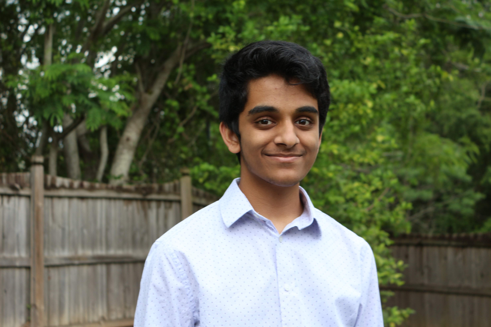
Karthik Vedula is a junior at James S. Rickards High School. He started going to math competitions in 3rd grade, and ever since then his interest in math has only grown. He discovered FLSAM in 6th grade and got exposed to even more difficult and intriguing questions in competitions such as PUMaC and CMIMC. His favorite part of math is meeting the many new, diverse, interesting, and funny people during math competitions. Other than that, he really enjoys solving and creating geometry questions, as well as eating them for breakfast, lunch, and dinner. In his spare time, besides eating geometry questions, one can find him eating real food, playing minesweeper, or playing Wii tennis.
Atharva Pathak:
Co-Vice President, Region 2
Coordinator
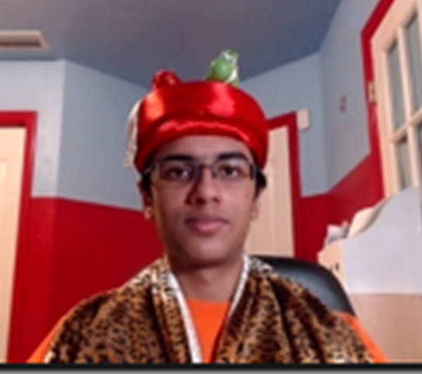
Atharva Pathak is a senior at Eastside High School in Gainesville. He was introduced to FLSAM through people at Mathcounts and FAMAT events in middle school. His favorite area of math is combinatorics, in which he is doing research as part of the MIT PRIMES program. Atharva can often be found reading football news about the Florida Gators, watching football, or trying to throw a football. The achievement he is most proud of is being on the Eastside football team, though he does not hit or get hit due to his significant athletic shortcomings and extreme musculoskeletal fragility. Intermittently he plays violin or tries to learn physics.
Saathvik Selvan:
Co-Vice President
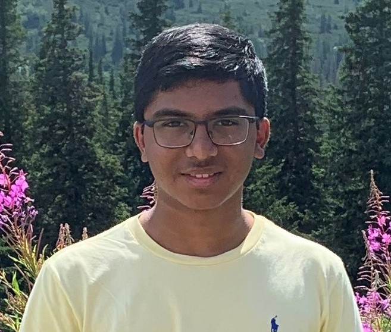
Saathvik Selvan is a senior at American Heritage School. He has been doing math competitions since he did the AMC8 in 5th grade and developed a passion for competing. Since then, he has competed in various other math contests such as FAMAT and Mathcounts. He discovered FLSAM in 9th grade and got exposed to even more math contests such as HMMT and ARML. Although he has many favorite topics in math, Geometry is definitely not on that list. He enjoys teaching other people, but can also be found playing video games, listening to music, playing the drums, and programming.
Aaron Hu:
Region 1 Coordinator, Curriculum
Committee
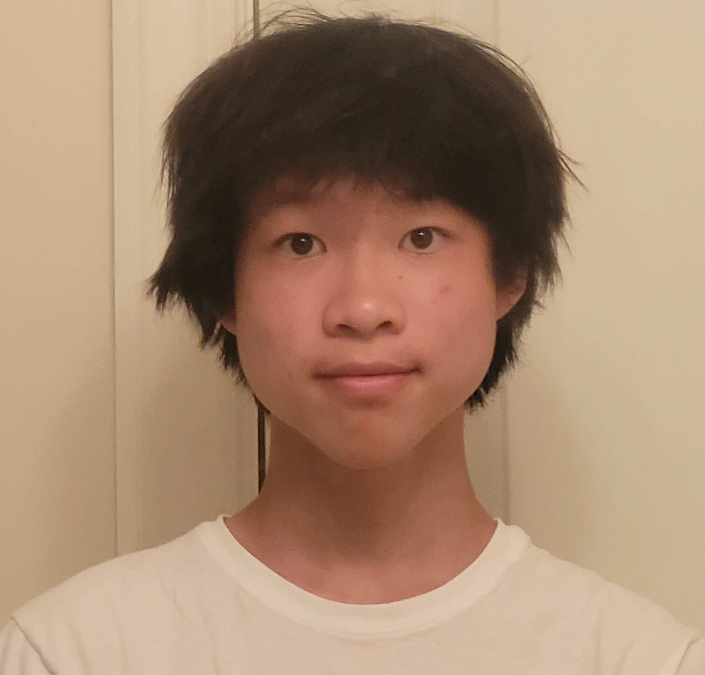
Aaron Hu is a sophomore at Lawton Chiles High School. He began competing in Mathcounts in sixth grade and since then has participated in FAMAT and the AMC series. He joined FLSAM in seventh grade and has enjoyed the various competitions they attend. His favorite part of math is geometry. Besides doing math, he spends his time playing tennis, reading, and playing video games.
Amrit Vignesh:
Region 3 Coordinator
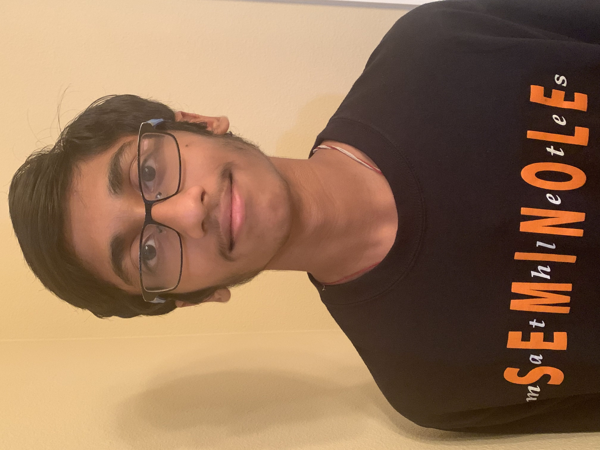
Amrit Vignesh is a sophomore at Seminole High School in Sanford. Ever since he moved to Florida, he has been participating in math competitions, including MathLeague, MATHCOUNTS, Mu Alpha Theta, and the AMC. He joined FLSAM in 9th grade and was able to expand his field of math competitions. His favorite fields of math are algebra and number theory. In addition to math, Amrit enjoys watching various sports and playing tennis.
Jing Cao:
Region 4a Coordinator
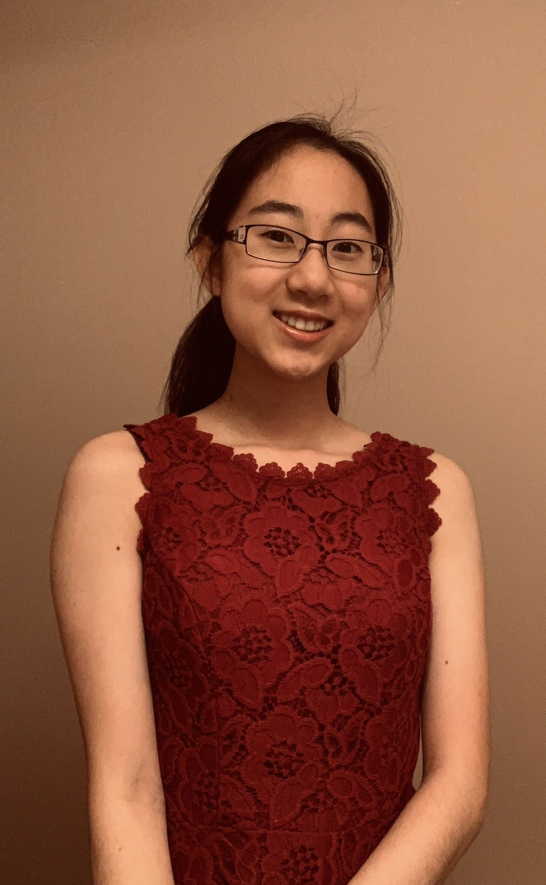
Jing Cao is a senior at King High School. Her career as a rat began in 2004 with the release of the hit Pixar film, Ratatouille. The wonders of cheese and cuisine captured her young mind and inspired her to travel to Paris to go to culinary school. However, one day, on her way home from school, baguette in hand, she witnessed her uncle’s murder. Lost and confused, she ran into the metro and fell into a hole that was filled with nothing but radioactive rats. Trapped in the darkness for 24 hours, she was bitten and traumatized. She later adopted the rat persona to strike fear into the hearts of her adversaries. Today, Cao patrols the streets of Paris hunting bad-guys and evil-doers with witty punchlines and grim one-liners. She’s not the rat this city needs, she’s the rat this city deserves. She. Is. Ratman.
Megan D’Souza
Region 4b Coordinator
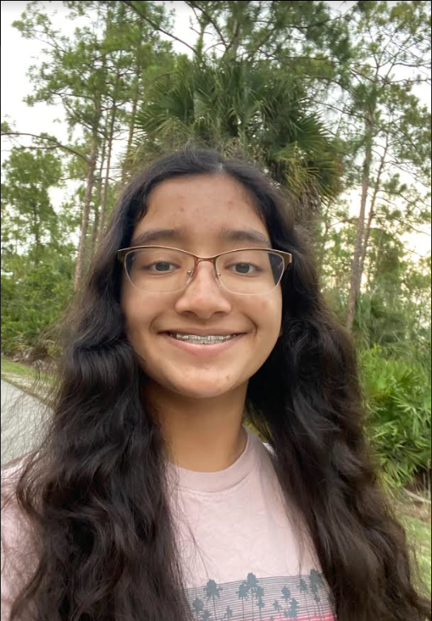
Megan D’Souza is a freshman at the Community School of Naples. She began competing in Mathcounts in sixth grade. Since then, she has competed in AMC, FAMAT, and AIME. Megan loves all types of math but is particularly fond of algebraic problems. When she is not doing math, Megan enjoys listening to music, spending time with her sister, and attending robotics competitions.
Christina Zhang:
Region 5a Coordinator
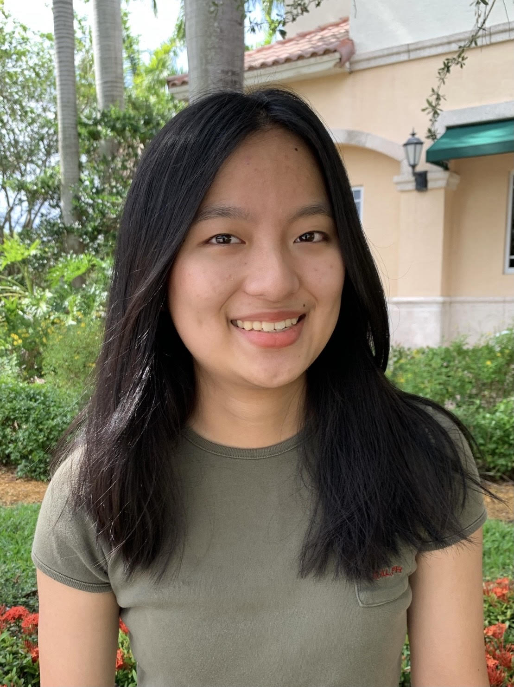
Christina Zhang is a senior at American Heritage Plantation. She has loved math her whole life but started participating in math competitions and was introduced to FLSAM in freshmen year. Her favorite subject in math is geometry and she enjoys helping other people with math. Outside of math, Christina likes watching Netflix, sleeping, playing the flute, and making paper stars. She is excited to meet new people and inspire others to join FLSAM.
Steven Diaz:
Region 5b Coordinator
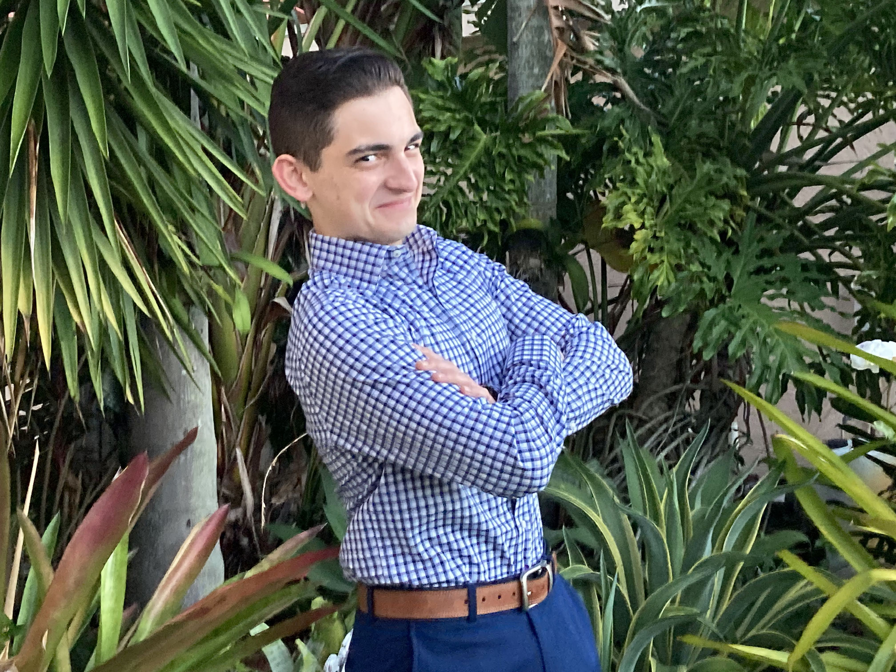
Steven Diaz is a senior attending Doral Academy High. This will be his second year as an officer and his third as a member of FLSAM. Steven first discovered his affinity for competitive math while attending local competitions in 6th grade and he’s been grinding away ever since! In his free time, he enjoys monitoring his investments in the stock market, hanging out with his four siblings, and playing Ultimate Frisbee.
Ritvik Teegavarapu:
Region 5c Coordinator, Curriculum Committee
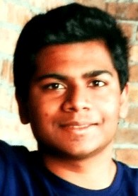
Ritvik Teegavarapu is a senior at American Heritage Boca Delray. He began competing in MathCounts and FAMAT in 6th and 7th grade. Since then, he has competed in AMC, AIME, CMIMC, and ARML which had problems that really piqued his interest. With this, he has become an avid problem writer, which has become his passion now. In his free time, you can find him reading more about the brain and learning niche programming languages.
Alexander Li:
Chair of Curriculum Committee
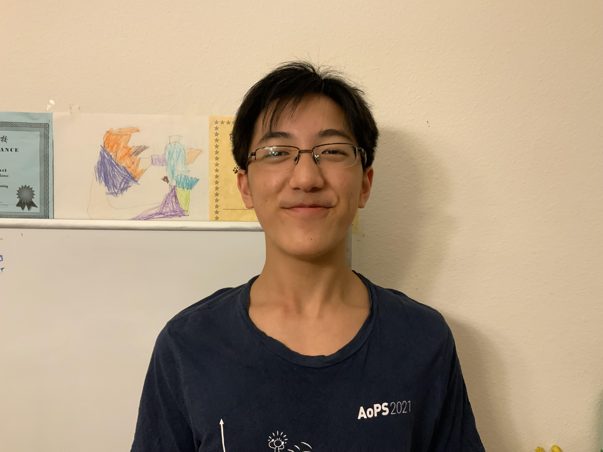
Alexander Li is a sophomore at King High School. He began competing through AMC 8, and later Mathcounts in middle school, joining FLSAM in 7th grade. His favorite topic is Mu Alpha Theta problems. When he is doing math, Alex likes working through contest problems and writing his own problems. When he is not doing math, Alex may be found studying physics or sleeping.
Charley Cheng:
Curriculum Committee
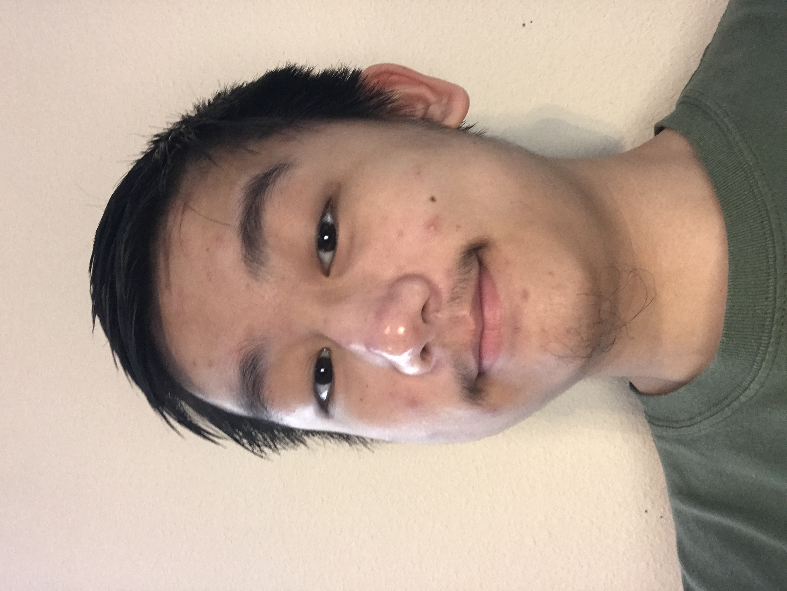
Charley Cheng is a senior at Middleton High School. His first experience with math competitions was mathcounts in 6th grade. He joined FLSAM in 8th grade and has been enjoying all the competitions that they attend such as PUMaC, HMMT, and ARML. His favorite problems in math are combinatorics ones that can be solved with (engineers) induction. He also enjoys other subjects such as coding and chemistry. When not studying, he likes to play ping pong and watch the NBA.
Sharvaa Selvan:
Curriculum Committee
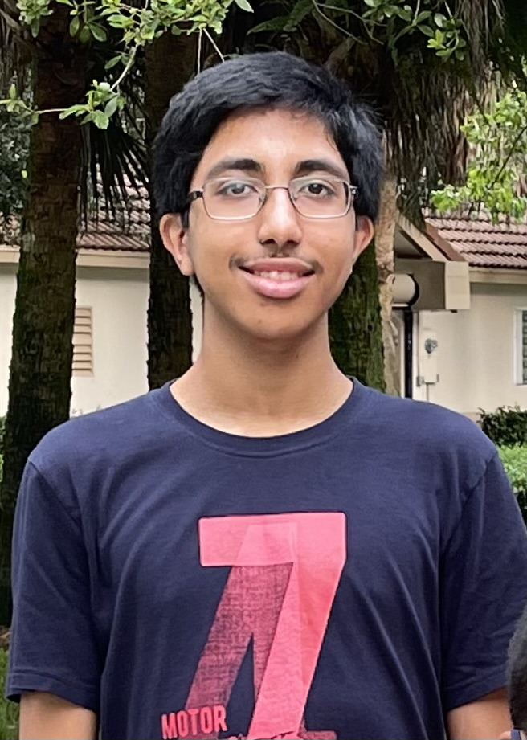
Sharvaa Selvan is a junior at American Heritage Broward. His passion for math began in 2nd grade when he started to compete in various regional and national math competitions. He has participated in USAJMO, HMMT, CMIMC, FAMAT, and many other contests throughout the years. Outside math he enjoys playing the guitar, debating, and learning chemistry. He is excited to be a part of FLSAM!
Tushar Gona:
Curriculum Committee
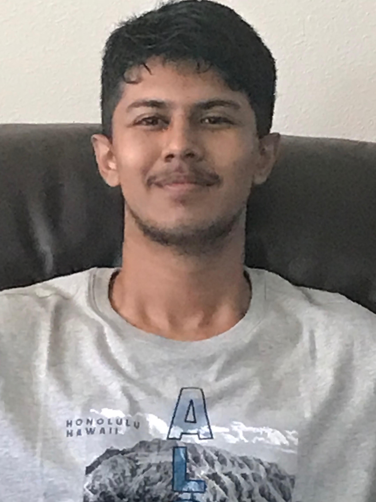
Tushar Gona is a senior at C. Leon King High School. He began competing in Mathcounts in 7th grade and joined FLSAM in 10th grade. His favorite areas of mathematics are probability and topology, and he hopes to pursue mathematical research in the future. Other than math, Tushar enjoys watching football, playing League of Legends, and sleeping.
Brighten Jiang:
Webmaster

Brighten is a senior at Lawton Chiles High school. He started math competitions in middle school with FAMAT but only joined FLSAM in 9th grade. Since then he has taken part in the AMC, mathcounts, and FAMAT competitions. Brighten's favorite subject is geometry. Besides math, he enjoys coding, playing video games, or playing tennis.